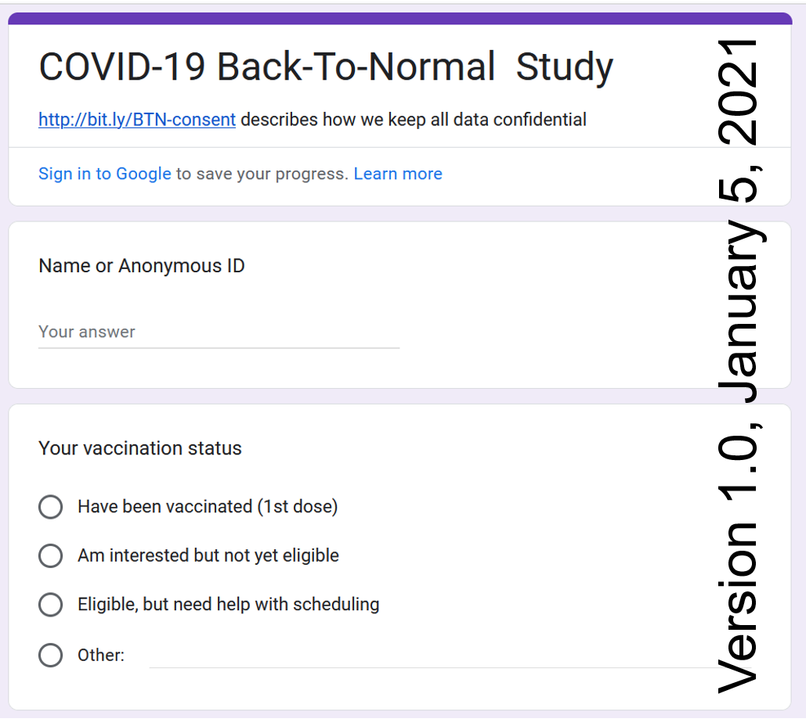
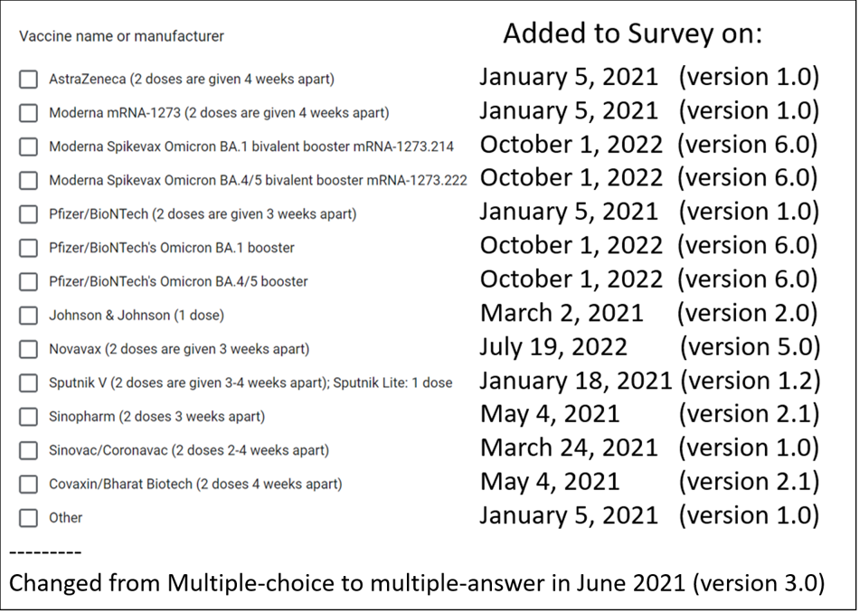
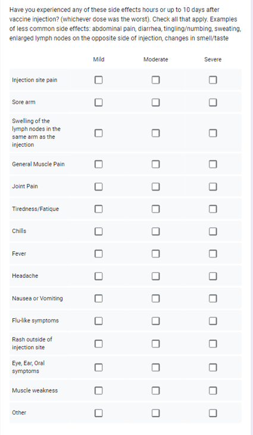
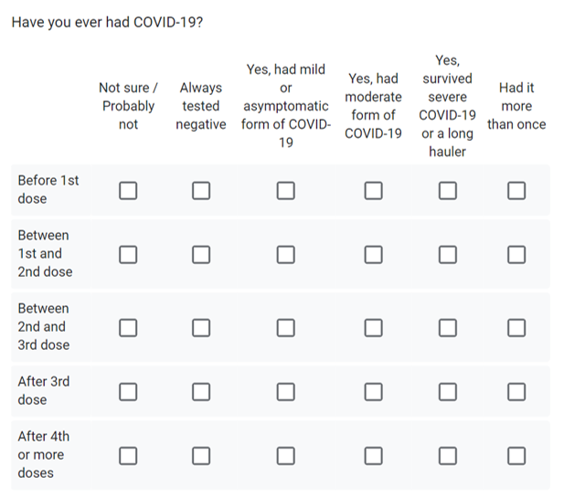
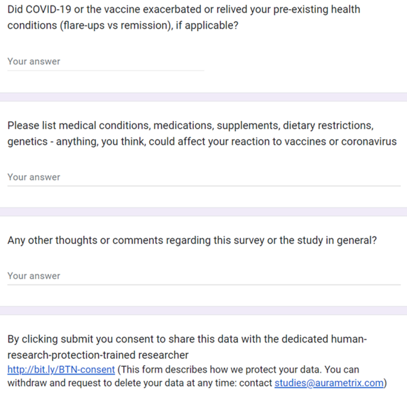

NCT04832932: The COVID-19 Back-to-Normal Study
Adaptable Longitudinal Survey
Data collection methods should facilitate quantification but should be also open to unanticipated information. Our COVID-19 survey is constantly evolving, driven by contributions from respondents and developing scientific knowledge about the variants of the virus, preventive, diagnostic and curative approaches. Here is the current generic version. The survey is customized based on the participant's community.
The COVID-19 Back-to-normal study was initiated in January 2021 as an effort of a tight-knit neighborhood to help each other avoid the virus and vaccinate safely. As soon as the first coronavirus vaccine was authorized, millions of people began anxiously counting down to the day they would receive their shot. During the first months of vaccination programs worldwide demand for vaccines exceeded supply. Elderly were prioritized in the phased allocation, but many were struggling to make an appointment since it required digital literacy. Our team was helping to navigate the booking proces. Hence, the first version of our survey included an option of requesting for help. It was mostly used by individuals over 80.
The survey kept evolving as new vaccines were approved and mixing doses become a norm. Questions about the number of doses were also changing.   The vaccine adverse reactions table was helpful in the first months of vaccine rollout. Back in January many did not know they can have enlarged lymph nodes visible as early as one day after vaccination that can remain enlarged for a month or more. Knowing this saved stress and unnessessary visits to doctors. . This large table was eventually replaced by a simple question: "Did you or your blood relatives have any unexpected or long-term effects of COVID-19 vaccine?" 
 Participants in this observational study have their health risk factors assessed at the start of the study, after vaccine doses and COVID-19. Some participants privately shared their health records and participated in additional interviews.
Our study is highly heterogenous - because of the variability in both interventions and the outcomes. One of our participants received the first COVID-19 vaccine shot shortly after Pfizer Emergency-Use authorization - in December 2020. Another participant received their first shot oin August 2022. One of our yet-unvaxxinated participants had COVID-19 four times. Another fully vaccinated and boosted individual had COVID-19 once before the first doze and twice after full vaccination with boosters. Some participants never had COVID-19 despite household exposure.
The Back-to-Normal study continues. The center of gravity for “back to normal” has shifted a little further, but we are almost there.
ClinicalTrials.gov: NCT04832932